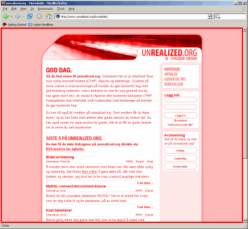
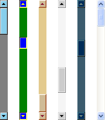
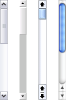
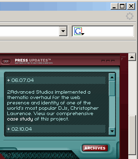

Hvorfor unngå egendefinerte rullefelt
Mange webdesignere tar skrittet til å endre utseendet på rullefeltene for å få disse til å harmonere med nettsidene sine. Denne artikkelen forklarer hvorfor dette ikke er noen god løsning, og drøfter deretter generelle problemer med rullefelt på nettsider.
CSS og rullefelt
Først litt terminologi: CSS definerer typografi og utforming innenfor et bestemt visningsområde (fig. 1), referert til som «the viewport» i spesifikasjonene. Dette området tar vanligvis opp størsteparten av nettleservinduet, og størrelsen avhenger av hvor mye ledig skjermareal brukeren har til disposisjon (og velger å bruke).

En utbredt misforståelse blant webdesignere er at størrelsen på visningsområdet tilsvarer skjermoppløsningen til brukeren, noe som slett ikke trenger å være tilfellet. Brukeren kan ha flere vinduer oppe samtidig, eller ha konfigurert nettleseren på en måte som begrenser visningsområdets omfang i nettleservinduet. Det er altså meningsløst å snakke om å utforme nettsider for bestemte skjermoppløsninger.
Når en nettside er for høy eller bred til å få plass innenfor visningsområdet, skal nettleseren tilby en mekanisme som lar brukeren bestemme hvilket utsnitt av siden som skal vises – vanligvis ved hjelp av såkalt rulling eller «scrolling».
Merk at CSS 2.1-spesifikasjonen ikke sier noe om hva slags mekanisme som skal tas i bruk for å rulle på en gitt plattform. Ved å sette
overflow-egenskapen til verdienscrollangir man riktignok rulling, men man har ikke sagt noe konkret om hvordan denne rullingen skal muliggjøres rent praktisk. Rullefelt er her én mulig styringsmekanisme – piltaster og musehjul er andre.
Microsofts CSS-utvidelser
Noen webdesignere har problemer med rullefelt fordi de avgrenser hele eller deler av nettsidene deres, uten å nødvendigvis gli «naturlig» inn i omgivelsene. For å øke spillerommet deres har Microsoft funnet opp sine egne utvidelser til CSS, som lar en forandre på rullefeltenes utseende med utgangspunkt i en begrenset «Windows-mal». (Det må nevnes at dette ikke er den eneste måten å endre rullefeltenes utseende på – man kan også bruke JavaScript, eller lage sine egne rullemekanismer i Flash – men det er den desidert letteste, og mest utbredte.)
Egenskapene det er snakk om, er disse:
scrollbar-3dlight-colorscrollbar-arrow-colorscrollbar-base-colorscrollbar-darkshadow-colorscrollbar-face-colorscrollbar-highlight-colorscrollbar-shadow-color
Å bruke disse egenskapene resulterer ikke bare i et brudd på standardene, men gir deg ironisk nok også mindre kontroll over nettsidens framtreden. Utvidelsene er nemlig bare støttet i et fåtall nettlesere, og er i tillegg praktisk talt umulig å implementere på mange plattformer. Utformer man sidene sine rundt det premisset at rullefeltenes utseende må følge stilen på siden, er man altså garantert at designet vil slå sprekker på flesteparten av plattformene, der utvidelsene ikke støttes!

Årsaken til at utvidelsene er vanskelig å implementere, er at de påvirker noe så OS-spesifikt som måten rullefeltene tegnes opp på. Før Microsoft lanserte et mer grafisk grensesnitt med Windows XP, var det forholdsvis enkle og lett påvirkelige former og figurer som utgjorde bestanddelene (jf. fig. 2). Både på nyere Linux- og Macintosh-systemer og i Windows XP er imidlertid brukergrensesnittet bygd opp av små, forseggjorte grafikkfiler som ikke like lett lar seg forandre på. Prøver man ut CSS-utvidelsene i Windows XP med standardtemaet valgt, blir faktisk rullefeltet byttet ut med den eldre utgaven fra de tidligere Windows-versjonene, som etter undertegnedes smak ikke er langt på nær like behagelig å se på. Et annet problem er at det ikke nødvendigvis er rullefelt som brukes for å rulle på en gitt plattform, noe CSS-spesifikasjonen som nevnt lar være å si noe om.
Nå er det mulig å unngå ikke-validerende nettsider ved å benytte seg av såkalte kondisjonelle kommentarer for Internet Explorer, eller bruke en annen metode basert på JavaScript eller Flash. I de aller fleste tilfeller vil imidlertid egendefinerte rullefelt gjøre nettsiden mer utiltalende eller vanskelig å bruke, fordi både brukervennligheten og brukerhøfligheten står på spill.
Rullefelt hos forskjellige brukere

Er det noe som varierer fra plattform til plattform, så er det brukergrensesnittets utforming og utseende. Med funksjonalitet som egne fargevalg, temaer og skrivebordsmiljøer, er dette ofte ikke bare forskjellig fra plattform til plattform, men også fra bruker til bruker. Selv hvis vi generaliserer og går ut fra at alle som bruker et gitt operativsystem har samme type brukergrensesnitt, medfører egendefinerte rullefelt komplikasjoner. Macintosh-brukere ser etter «Macintosh-rullefelt», Windows-brukere ser etter «Windows-rullefelt», men ingen finner nøyaktig det de leter etter. En av de virkelig flotte sidene ved dagens operativsystemer er at folk kjenner seg igjen fra program til program.
Det som er viktig å forstå er at brukergrensesnittets utseende i høyeste grad er en privat affære, og at selv overstyring av noe så grunnleggende som fargene på skjermelementene kan skape irritasjon eller forvirring hos mange typer brukere:
- Blinde og svaksynte, som bruker et fargeoppsett med høy kontrast
- Fargeblinde, som har vanskeligheter med å skille enkelte farger
- De av oss som er utpregede estetikere, og som bruker mye tid på å velge farger etter egne preferanser
- Uerfarne brukere, som finner plutselige endringer i grensesnittet forvirrende
I tillegg vil man aldri kunne vite hvilken farge det er på nettleseren som rullefeltene til visningsområdet er en del av, noe som vil si at man ikke engang kan foreslå hvilke farger rullefeltene skal befinne seg ved siden av. Hos brukere som har satt sammen sitt eget fargeoppsett, er derfor sannsynligheten høy for at en grell kontrast oppstår, stikk i strid med selve hensikten med egendefinerte rullefelt. Enda mer problematisk er det dersom fargekombinasjonen gjør rullefeltene vanskeligere å få øye på og bruke.
Rulling innenfor visningsområdet

Til slutt kommer noen ord om rulling innenfor visningsområdet, eller «inline scrolling» som det gjerne heter i sjargongen. Det er altså snakk om at deler av nettsiden er utstyrt med egne mekanismer for rulling, enten det skyldes bruk av rammer («frames»), CSS-egenskapen overflow eller Flash. Også dette gjør sidene vanskeligere å bruke, av navigeringsmessige årsaker. Slike sideelementer krever stort sett at man velger dem med pekeren, og dermed økes klikkingen betraktelig. Samtidig økes også risikoen for feilklikking, fordi rullefeltene ofte befinner seg side om side med lenker og andre interaktive elementer. Særlig for folk som bruker styreplate, er det praktisk at klikkingen reduseres til et minimum.
I tillegg er det bare mulig å rulle ett element om gangen, noe som betyr at det ikke er mulig å rulle hele siden (visningsområdet) med piltastene eller musehjulet når et sideelement er valgt. For å gå tilbake til å rulle hele nettsiden, må man altså bruke pekeren enda en gang for å velge rullefeltene til visningsområdet. Derfor bør rulling innenfor visningsområdet brukes sparsommelig, fordi det medfører et avbrudd i den tradisjonelle måten å navigere på.
Store rullefelt
Det verste man kan gjøre, er å la selve innholdet eller andre større sideelementer rulle, fordi dette er dømt til å medføre komplikasjoner for besøkende med begrenset skjermareal. Størrelsen på rullefeltene kan overstige størrelsen på visningsområdet, noe som betyr at man blir nødt til å rulle hele siden fram og tilbake for å ta dem i bruk. En måte å forhindre dette på, er selvsagt å begrense størrelsen på nettsiden, men dette vil sannsynligvis gjøre teksten mindre leselig for brukere med høy skjermoppløsning.
Oppfordring
Oppfordringen her går altså på å ikke overstyre grensesnittet til brukeren, og å bruke rulling innenfor visningsområdet sparsommelig. Da blir iallfall WWW et litt bedre sted å ferdes!